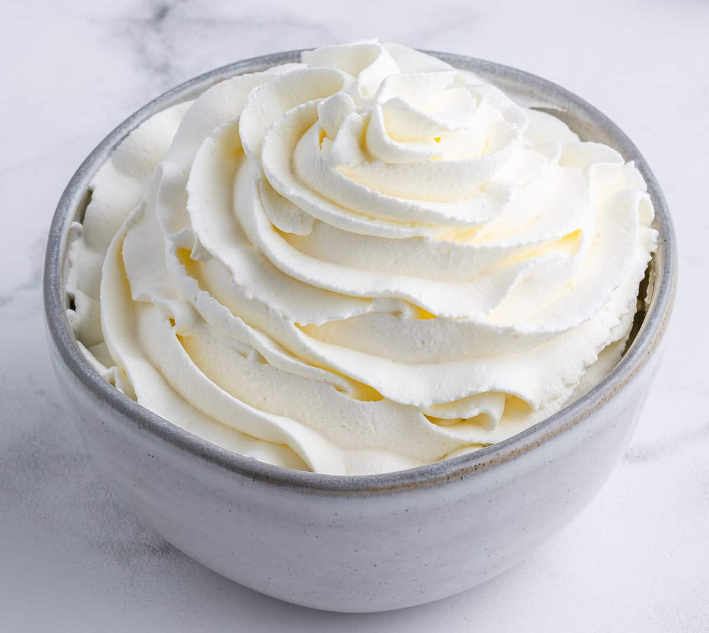

Easy Whipped Cream

This crepe recipe is essential for sweet breakfasts or cozy date nights.
How to make basic whipped cream. For best results make sure whisk and bowl
are ice cold.
Ingredients
Serving Size: 8 servings
- 1/2 cup heavy cream
- 1/2 teaspoon vanilla extract
- 1/2 tablespoon confectioners' sugar
Steps
-
In a large bowl, whip cream until stiff peaks are just about to form.
Beat in vanilla and sugar until peaks form. Make sure not to over-beat,
cream will then become lumpy and butter-like.
Nutrition Facts
Per Serving:
- 54 calories
- 0.3g protein
- 0.9g carbohydrates
- 5.5g fat
- 20.4mg cholesterol
- 5.7mg sodium
Back to Home